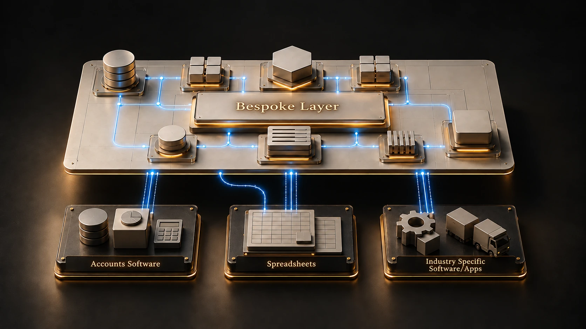

01
Understand the work
Find the point where work breaks.
Trace the people, systems and hand-offs. Agree one useful change worth making.
You leave withA focused starting point.
Proof Systems
Software · Integration · Automation
Software that fits your work, connects your tools and cuts repetitive admin.

Bespoke LayerA practical starting point
No replacement programme is assumed. Start with how the business works, try an early demonstration and refine it with your team.
Trace the people, systems and hand-offs. Agree one useful change worth making.
Using AI to build an early demonstration, so your team can try the workflow before a larger commitment.
Short iterations improve the steps and connections around the people doing the work.
Check the rules, integrations and permissions. Test with the people using it, then introduce it carefully.
The missing software layer
Keep the software that works. Connect the work that falls between it.
A strong core.
Work still falls outside it.
Useful tools.
Gaps between them.
The software follows the work.
Whether you run one main system, separate tools or both, I build around the gaps and keep the work connected.
AI makes it quicker and cheaper to build a working demonstration, test it with your team and improve it before a larger commitment.
What I help with
Connect your main business system, specialist applications and everyday tools. Add focused software around the way your business operates.
Discuss a system ↗Selective AI and automation when the workflow and controls are ready, with clear checks and human decisions where they matter.
Discuss a workflow ↗Practical, role-specific AI team training built around the work your people actually do.
Explore training ↗Illustrative example · no client data
Evidence from construction operations
These examples draw on construction experience across site capture, commercial control and finance. They use synthetic data and are not external client case studies.
First: reliable field evidence
Weekly site records fed the business’s existing cost-control and payment processes.
View SiteLogLater: extend the workflow
BudgetFlow connected SiteLog records, managers’ cost allocation and the existing accounting software.
View BudgetFlowReliable hand-off
Accounts data is extracted through a checked route and prepared for connected reporting.
View LedgerLinkStart with the records. Extend the connection. SiteLog first supported existing cost-control and payment processes. BudgetFlow later extended that workflow.
Operator first
I’m Mat Glendenning. My experience combines operational leadership, systems design and hands-on delivery. Across sixteen years inside an operating construction business, including time as its managing director, I built and improved systems used by finance, commercial and operational teams.
In 2016, I also co-founded Jobhawk, a mobile-first construction recruitment marketplace. We raised £1m+, with the Isle of Man Government as lead investor. That experience sharpened my understanding of product fit, adoption and the operating realities that determine whether technology succeeds.
Proof Systems applies that operator’s view to owner-led businesses. I begin with the work, the people responsible for it and the evidence they need.
View Mat’s LinkedIn ↗Start with the work
Tell me about one recurring workflow. Keep the first description general and do not send confidential documents or sensitive personal information. I will review it personally.